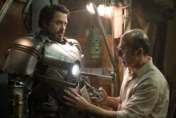
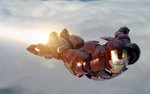
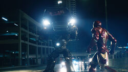

Iron Man is a 2008 superhero film, based on the Marvel Comics superhero of the same name.
It is the first film in the Marvel Cinematic Universe, and the first installment of Phase One.
The film was released on April 30, 2008 internationally and on May 2, 2008 in the United States.
The film is directed by Jon Favreau and stars Robert Downey, Jr. as Tony Stark/Iron Man,
Terrence Howard as James Rhodes, Jeff Bridges as Obadiah Stane/Iron Monger, Leslie Bibb
as Christine Everhart, Shaun Toub as Ho Yinsen, Faran Tahir as Raza, Clark Gregg as Phil
Coulson, and Gwyneth Paltrow as Pepper Potts.
Plot
Playboy and visionary industrial genius Tony Stark, CEO of leading military defense contractor,
Stark Industries, is in war-torn Kunar, Afghanistan, to demonstrate his company's new Jericho missile. With
him is his friend and military liaison, Lieutenant Colonel James Rhodes, a member of the U.S. Air Force.
While riding in a transport convoy, Stark is critically wounded in an ambush and held captive in a
cave by the Ten Rings. An electromagnet built by fellow captive Ho Yinsen keeps the shrapnel that wounded Stark from
reaching his heart and killing him. The Ten Rings leader, Raza, offers Stark freedom; in exchange, Stark must build a
Jericho missile for the terrorists. Stark and Yinsen agree that Raza will not keep his word of letting Stark live.

While pretending to work on the missile, Stark and Yinsen secretly build a powerful electric generator
called an Arc Reactor to power Stark's electromagnet. They then begin to build a powered suit of armor,
designed by Stark, to help them escape. The Ten Rings ambush the workshop when they discover Stark's plan,
but Yinsen sacrifices himself to distract them while Stark's suit powers up. Using the armored suit, Stark
fights his way out of the cave to find a mortally wounded Yinsen, who reassures Stark and urges him to continue
his escape and not waste his life. An enraged Stark leaves the cave, burns the terrorist's stockpile of Stark
Industries-produced weapons, and flies away. Having escaped, Stark crashes in the desert, which destroys the suit.
After being rescued by a search party, including Rhodes, Stark returns home. He calls a press conference to announce that his company will no longer manufacture weapons, having seen first-hand the strife that they cause in the wrong hands. Obadiah Stane, his father's old partner and the company's manager, informs Stark that this may ruin Stark Industries and his father's legacy.
In his home workshop, Stark spends the next few months building an improved version of his suit, as well as a more powerful arc reactor for his chest. At Stark's first public appearance after his return, Christine Everhart informs him that Stark Industries weapons, including the Jericho missile, were recently delivered to the Ten Rings and are being used to attack Gulmira, Yinsen's home village. Stark confronts Stane about the supplied weapons and learns that Stane is trying to replace him as head of the company.

Enraged, Stark dons his new armor and flies to Afghanistan, where he saves the citizens of Gulmira from the Ten Rings' wrath. While flying home, Stark is engaged by two F-22 Raptors on behalf of the U.S. Air Force. He phones Rhodes and reveals his identity in an attempt to call off the attack. Meanwhile, the Ten Rings gather the pieces of Stark's prototype suit. Raza meets with Stane and offers to exchange the suit with him. However, Stane has Raza and his faction eliminated, taking the suit for himself. Returning to Stark Industries, Stane orders his scientists to have a new suit reverse-engineered from the wreckage.
Seeking to find any other weapons delivered to the Ten Rings, Stark sends his trusted personal assistant, Pepper Potts, to hack into the company computer system from Stane's office. Potts finds evidence of Stane supplying weapons to the terrorists, but also discovers that Stane had initially hired the Ten Rings to kill Stark in Afghanistan. After an uncomfortable encounter with a suspicious Stane, Potts meets with Phil Coulson of the Strategic Homeland Intervention, Enforcement and Logistics Division to inform him of Stane's activities.

Stane's scientists reveal that they cannot finish his suit, as no one can manage to duplicate Stark's Arc Reactor. Stane ambushes Stark at his home, using a Sonic Taser to paralyze him and take his current Arc Reactor. Left to die, Stark manages to crawl to his lab and saves himself by re-using his original arc reactor. Potts and several S.H.I.E.L.D. agents attempt to arrest Stane, but he dons his suit and attacks them. Stark fights Stane, but is outmatched without his upgraded reactor to run his suit at full capacity.
Stark lures Stane atop the Stark Industries building and instructs Potts to overload the large Arc Reactor there. Doing so unleashes a massive electrical surge that knocks Stane unconscious, causing him and his armor to fall into the exploding reactor, killing him. The next day, the press has dubbed the armored hero "Iron Man." Agent Coulson gives Stark a cover story to explain the events of the night and Stane's death. At a press conference, Stark begins giving the cover story, but then instead announces that he is Iron Man, shocking the public as the crowd of interviewers suddenly begin roaring out questions, much to Rhodes' confusion.
End